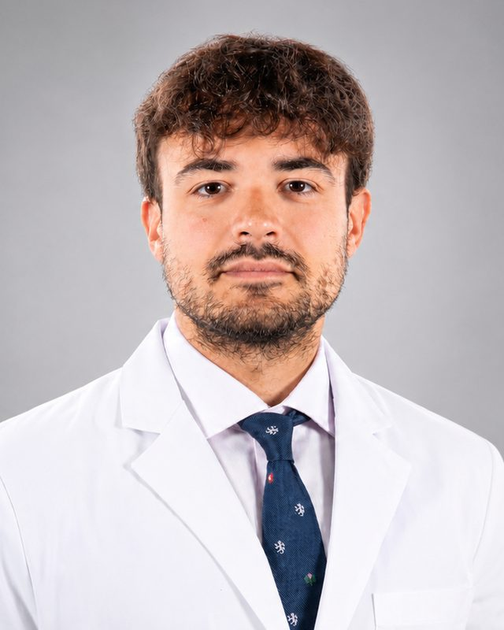

Psychiatric care that reaches you wherever you live in Europe.
Secure video consultations across the European Union with Professor Giovanni Briganti, specialist physician in psychiatry, practising from Belgium and Luxembourg.
Care offered
Video consultations
Secure video appointments for assessment and follow-up, particularly suited to people already in treatment or living far from specialist care.
Second opinions
A detailed review of a diagnosis or treatment plan, with a written report for you and, with your consent, for your doctors.
Documents that travel with you
Prescriptions drawn up to the European standard for use in another Member State, medical certificates and written reports.
How a consultation works
Get in touch
Send a short message by email. Available times, fees and practical conditions are sent to you in writing before anything is booked.
Complete a questionnaire
Before the first appointment, you fill in a short set of validated questionnaires in your own language. It takes about fifteen minutes.
Meet by video
The consultation takes place on a secure platform, from a quiet and private place of your choice. Nothing is recorded.
Receive a report and a plan
You receive a written summary of the plan agreed together, with any prescription or certificate needed. Follow-up is arranged at a pace that suits you.
About Professor Briganti

Giovanni Briganti is an MD-PhD specialist physician in psychiatry who heads psychiatric units. He holds the Chair of AI and Digital Medicine at the University of Mons, where he leads the Department of Computational Medicine and Neuropsychiatry, and is Visiting Professor of Psychiatry at the University of Oxford.
Practical information
- Fees and reimbursement
- Fees are communicated in full before any appointment. Reimbursement depends on your health insurance and country of residence; within the EU, your insurer may refund part of the cost under the cross-border healthcare rules.
- Limits of video consultations
- Video suits many situations, though not all. If an in-person assessment is needed, you will be told clearly and helped to arrange it with a clinician near you. Acute crises require local emergency care.
- Confidentiality
- Consultations are covered by medical confidentiality and the GDPR. The video platform is encrypted and sessions are not recorded.
- Applicable rules
- Care is provided under the law and professional rules of Belgium or Luxembourg, depending on the practice from which the consultation is given, as set out in EU Directive 2011/24/EU.
Contact
Write to request an appointment. Messages are answered on working days.
professorbriganti@proton.mePrivacy
This website sets no cookies and uses no tracking or analytics. Information you send by email is used only to answer your request and organise your care, and is kept in accordance with the GDPR and the rules on medical records. You may ask to access, correct or delete it by writing to the address above.